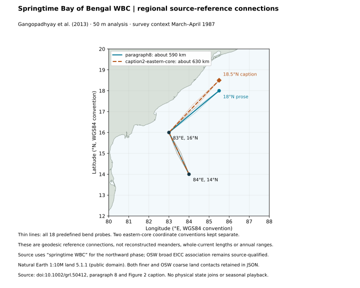
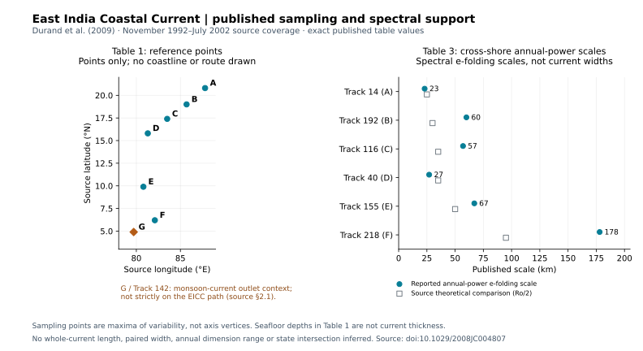

East India Coastal Current: regional references and source support
Two regional reference estimates and thirteen published source-table records. The reference estimates connect approximate source locations; the table records describe sampling and spectral diagnostics. None supplies a whole-current length or seasonal dimension range.
Springtime regional reference connections
Gangopadhyay et al. (2013) distinguish the northward springtime western boundary current (WBC) from the southward phase they call EICC. OSW associates this source-specific spring regime with its broader EICC entry. The 50 m analysis uses survey-wide support from 22 March to 28 April 1987; exact simultaneous axis occupation dates are unknown.
The prose places an eastern section core near 18°N, while its caption describes about 18.5°N. Both coordinate conventions are retained separately. They are not minimum and maximum physical current lengths.

Open full-size reference map. All eighteen probes clear both retained land masks. Cartographic checks do not establish a measured current axis or navigational clearance.
Springtime WBC reference — prose core at 18°N
About 590 km
Regional editorial source-anchor connection; paragraph8. 50 m analysis, March–April 1987 survey context. Nine bend probes are editorial sensitivity, not physical uncertainty or annual variability. Source calls the northward spring phase WBC; no whole-current EICC length admitted.
Nine ±10 km bend probes are retained for this source-coordinate convention. Their spread is editorial sensitivity.
Open this reference and its query map · Inspect this source candidate
Springtime WBC reference — caption core at 18.5°N
About 630 km
Regional editorial source-anchor connection; caption2-eastern-core. 50 m analysis, March–April 1987 survey context. Nine bend probes are editorial sensitivity, not physical uncertainty or annual variability. Source calls the northward spring phase WBC; no whole-current EICC length admitted.
Nine ±10 km bend probes are retained for this source-coordinate convention. Their spread is editorial sensitivity.
Open this reference and its query map · Inspect this source candidate
Seven published sampling reference locations
Durand et al. (2009), Table 1: each location selects maximal cross-track current variability on an altimeter track. These points are not connecting route vertices. Coordinates retain the source's 0.1° precision; its datum is unspecified.
Point G / track 142 supplies monsoon-current outlet context and is not strictly on the EICC path. Nearest-shore distance is not current width, and reported bathymetry is seafloor depth, not current depth or thickness.
Query all sampling locations
Point A · track 14
- Source position
- 87.8°E, 20.8°N
- Nearest shore
- 84.4 km
- Seafloor depth
- 63 m
Source-selected variability reference, not a route vertex. November 1992–July 2002 coverage. Nearest-shore distance is not width; bathymetry is not current depth.
Inspect source pointPoint B · track 192
- Source position
- 85.7°E, 19.0°N
- Nearest shore
- 71.9 km
- Seafloor depth
- 1199 m
Source-selected variability reference, not a route vertex. November 1992–July 2002 coverage. Nearest-shore distance is not width; bathymetry is not current depth.
Inspect source pointPoint C · track 116
- Source position
- 83.5°E, 17.4°N
- Nearest shore
- 45.7 km
- Seafloor depth
- 615 m
Source-selected variability reference, not a route vertex. November 1992–July 2002 coverage. Nearest-shore distance is not width; bathymetry is not current depth.
Inspect source pointPoint D · track 40
- Source position
- 81.3°E, 15.8°N
- Nearest shore
- 35.8 km
- Seafloor depth
- 288 m
Source-selected variability reference, not a route vertex. November 1992–July 2002 coverage. Nearest-shore distance is not width; bathymetry is not current depth.
Inspect source pointPoint E · track 155
- Source position
- 80.8°E, 9.9°N
- Nearest shore
- 60.7 km
- Seafloor depth
- 289 m
Source-selected variability reference, not a route vertex. November 1992–July 2002 coverage. Nearest-shore distance is not width; bathymetry is not current depth.
Inspect source pointPoint F · track 218
- Source position
- 82.1°E, 6.2°N
- Nearest shore
- 54.9 km
- Seafloor depth
- 4252 m
Source-selected variability reference, not a route vertex. November 1992–July 2002 coverage. Nearest-shore distance is not width; bathymetry is not current depth.
Inspect source pointPoint G · track 142
- Source position
- 79.7°E, 4.9°N
- Nearest shore
- 134.7 km
- Seafloor depth
- 4202 m
Monsoon-current outlet context, not strictly on the EICC path. November 1992–July 2002 coverage. Nearest-shore distance is not width; bathymetry is not current depth.
Inspect source pointSix cross-shore spectral scales
Durand et al. (2009), Table 3: e-folding scales of annual spectral power, with a theoretical Ro/2 comparison. These are not paired current widths, independent width samples or annual width extrema.

Open full-size source-support chart. Source coverage November 1992–July 2002; no source figures digitized.
Published annual-power scales and source theoretical comparison| Track | Reported scale | Theoretical Ro/2 |
|---|
| Track 14 |
23 km | 25 km |
|---|
| Track 192 |
60 km | 30 km |
|---|
| Track 116 |
57 km | 35 km |
|---|
| Track 40 |
27 km | 35 km |
|---|
| Track 155 |
67 km | 50 km |
|---|
| Track 218 |
178 km | 95 km |
|---|
Query all spectral-scale records